Microsoft Azure Data Fundamentals Certification (DP-900) Exam Questions
Attention
The questions in this website is a collection of free available resources from several sources. The use of any parts for commercial use is strictly prohabit. For personnal use only.
Question 1
Domain: Describe core data concepts
The common tasks and responsibilities of a data analyst include,
A. Finding hidden patterns using data
B. Focuses only on the available data
C. Restricts access to data in the company
D. Arrives at conclusions with one-step analysis
Answer 1
Correct Answer: A
A data analyst uses various techniques and tools for collating data from different sources to visualize the data in an understandable and relevant format. Data analysts use the visualization tools for the transformation of data into graphical formats that can help in finding useful patterns in the data.
Option A is CORRECT. Data analysts are primarily responsible for using visualization tools, and their skills in using data can help them in the transformation of data into understandable formats according to business requirements.
Option B is incorrect. Data analysts combine the resultant sets of data from different sources, and in some cases; they rely on live operational data.
Option C is incorrect. Data analysts have to share their data visualization reports with employees in other departments while also addressing the responsibility of integrating data from many sources for better insights.
Option D is incorrect. Data analysts don’t just observe the data from different sources arranged in a specific format to deliver insights. They have to refine the data by removing redundancies and errors in raw data from different sources and transform it, followed by improvements before visualizing them into desired formats.
Reference:
To know more about the tasks and responsibilities of data analysts refer to the following Azure documentation,
Question 2
Domain: Describe core data concepts
Choose the right type of the following graph.
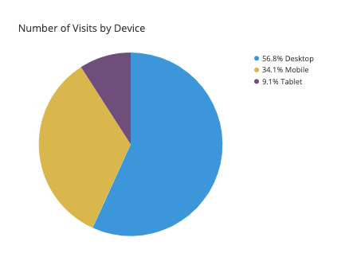
A. Bar chart
B. Pie chart
C. Tree map
D. Line Chart
E. Scatter Chart
Answer 2
Correct Answer: B
A pie chart displays the division of the total amount among different categories as a circle divided into radial slices. A single slice in the circle represents a category and the size of the slice represents the proportion of that category out of the total.
Option A is incorrect. A bar chart displays numeric values against different categories in a 2-axis plot. One axis lists the category levels and for each category, one bar is plotted, and the length of the bar along the other axis represents the numeric value assigned to that category.
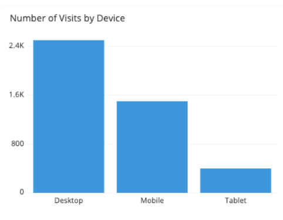
Figure: An example of bar chart
Option B is correct. As in the above diagram, the categories and their share are denoted by the slices of the circle. The above diagram is an example of a Pie chart.
Option C is incorrect. Treemap is a chart of colored rectangles where size represents the relative value of each item. They can be hierarchical, with rectangles nested within the main rectangles.
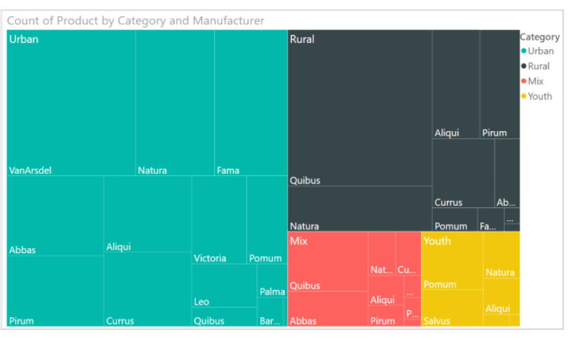
Figure: An example of TreeMap
Option D is incorrect. The line chart emphasizes the overall shape of an entire series of values, generally over time.
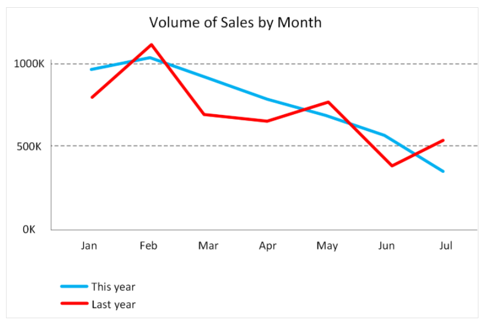
Figure: Example of a Line Chart
Option E is incorrect. A scatter chart displays the relationship between two numerical values.
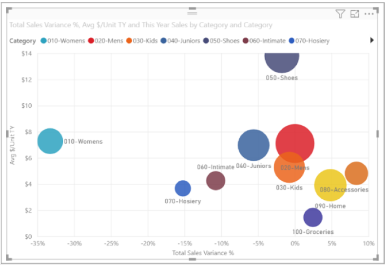
Figure: An example of Scatter chart
References:
To know more, please refer to the Azure documentation below:
https://chartio.com/learn/charts/how-to-choose-pie-chart-vs-bar-chart/
Question 3
Domain: Describe core data concepts
In Azure Data Lake storage, there is some important data present in the files. You need to retrieve and use this data to fill the tables present in Azure Synapse Analytics. Which of the following processing options would you use? (Choose the best option)
A. Synapse Link
B. Synapse Spark pool
C. Synapse pipelines
D. Synapse SQL pool
Answer 3
Correct Answer: D
In Azure Synapse Analytics, SQL pool can be used in the following cases:
Complex reporting. Transact-SQL can be optimally used for running complex SQL queries, summarizing, and aggregating the data.
Data ingestion. PolyBase helps you in retrieving the data from multiple external sources and change it into a tabular type/format. This data can be reformatted and saved as tables in Azure Synapse.
Option A is incorrect. Synapse link enables you to connect to Cosmos DB, not Azure Data Lake Storage.
Option B is incorrect. Although Spark pool can be used for extracting the data from Data Lake storage, it is not the best solution in the given case.
Option C is incorrect. Synapse pipelines can’t be used to retrieve the data from Data Lake Storage.
Option D is correct. Polybase from Synapse SQL Pool is the best solution in the given case.
Reference:
To know more about how to access external data from Azure Synapse Analytics using Polybase, please visit the below-given link:
Question 4
Which of the following are the roles and responsibilities of a database administrator? (Choose 3 Options)
A. To install and upgrade the database server and application tools.
B. To enroll the users and maintain system security.
C. To develop, construct, test, and maintain the databases and data structures.
D. To monitor and optimize the performance of the database
E. To Prepare the data for prescriptive and predictive modeling
Answer 4
Correct Answers: A, B and D
Database Administrator is tasked to manage and organize the databases. The main job of a database administrator is to ensure that data is available and protected from loss, theft, and corruption and is easily accessible whenever needed. The following figure shows the common roles and responsibilities of a database administrator:
- To install and upgrade the database server and application tools.
- To allocate system storage and plan storage needs for the database system.
- To modify the database structure, as necessary, from information provided by application developers.
- To enroll the users and maintain system security.
- To ensure compliance with the database vendor license agreement.
- To control and monitor user access to the database.
- To monitor and optimize the performance of the database.
- To do Planning for backup and recovery of database information.
- To maintain archived data.
- To ensure Backing up and restoring databases.
- To contact database vendor for technical support.
- To generate various reports from the database using appropriate queries as per needs.
- To manage and monitor data replication.
Option A is correct. To install and upgrade the database server and application tools is one of the common roles and responsibilities of a database administrator.
Option B is correct. To enroll the users and maintain system security is one of the common roles and responsibilities of a database administrator.
Option C is incorrect. To develop, construct, test, and maintain the databases and data structures is the responsibility of the data engineer, not the data administrator.
Option D is correct. To monitor and optimize the performance of the database is one of the common roles and responsibilities of a database administrator.
Option E is incorrect. To Prepare the data for prescriptive and predictive modeling is the responsibility of the data engineer, not the data administrator
References:
To know more about the roles and responsibilities of a Data Administrator, please refer to the Azure documentation below:
Question 5
Domain: Describe how to work with relational data on Azure
Fill in the blank:
A database index allows a query to ____ data efficiently from a database.
A. Delete
B. Retrieve
C. Find
D. Search
Answer 5
Correct Answer: B
A database index consists of one or more keys and is related to the specific tables. It allows a query to retrieve data efficiently from a database. As a database index increases the speed of data retrieval, it is required to define correct indexes for each table.
Option A is incorrect. A database index allows a query to retrieve, not delete data efficiently from a database.
Option B is correct. A database index allows a query to retrieve data efficiently from a database.
Option C is incorrect. A database index allows a query to retrieve, not find data efficiently from a database.
Option D is incorrect. A database index allows a query to retrieve, not search for data efficiently from a database.
Reference: To know more about Database Index, refer to the link below:
Question 6
Domain: Describe how to work with relational data on Azure
Which of the following is used to create and modify the structure of database objects?
A. DQL (Data Query Language)
B. DDL (Data Definition Language)
C. DCL (Data Control Language)
D. DML (Data Manipulation Language)
Answer 6
Correct Answer: B
SQL is a database language used to create a database and perform certain operations on the existing database. There are four different types of SQL commands -
- DDL (Data Definition Language)
- DQL (Data Query Language)
- DML (Data Manipulation Language)
- DCL (Data Control Language)
Data Definition Language (DDL) used to create and modify the structure of database objects.
Option A is incorrect. Data Query Language (DQL) is used to perform queries on the data within schema objects.
Option B is correct. Data Definition Language (DDL) used to create and modify the structure of database objects.
Option C is incorrect. Data Control Language (DCL) is used for the permissions, rights, and other controls of the database system.
Option D is incorrect. Data Manipulation Language (DML) is used for the manipulation of data present in the database.
Reference: To know more about the different types of SQL commands, refer to the link below:
https://www.geeksforgeeks.org/sql-ddl-dql-dml-dcl-tcl-commands/
Question 7
Domain: Describe how to work with relational data on Azure
Which of the following categories of delivery models do Azure data services belong to?
A. IaaS
B. PaaS
C. SaaS
D. DaaS
Answer 7
Correct Answer : B
PaaS or Platform as a Service delivery model involves the installation and management of database software by the user. It allows the specification of resources required for specific operations such as the size of the database, number of users, and desired levels of performance.
Option A is incorrect. IaaS or Infrastructure as a Service involves creating a virtual infrastructure in the cloud that resembles the working of an on-premises data center.
Option B is CORRECT. Azure data services don’t deal with creating virtual infrastructures, they allow users to install and manage the services of the database software. Azure takes care of the management and other desired configurations such as the addition or removal of virtual machines according to your requirements with PaaS.
Option C is incorrect. SaaS or Software as a Service delivery models deal with the particular software packages capable of installation and operations on virtual hardware on the cloud.
Option D is incorrect. DaaS or Desktop or Data as a Service delivery models deal with the facility of pre-configured system configurations for a user machine delivered on a virtualized environment.
Reference:
To know more about service delivery models of Azure Data Services, you can refer to the following Azure documentation,
Question 8
Domain: Describe how to work with relational data on Azure
Fill in the blank:
The ____ contains trusted Fabric Controllers and supporting systems.
A. Device VLAN
B. Main VLAN
C. FC VLAN
D. All the Above
Answer 8
Correct Answer - C The Azure production network is segregated into three primary VLANs in a logical manner.
- The FC VLAN: It contains supporting systems and trusted Fabric Controllers
- The Main VLAN: It interconnects the untrusted customer nodes
- The Device VLAN: It contains a trusted network and all other infrastructure devices
Option A is incorrect. The Device VLAN contains a trusted network and all other infrastructure devices.
Option B is incorrect. The main VLAN interconnects the untrusted customer nodes.
Option C is correct. The FC VLAN contains supporting systems and trusted Fabric Controllers.
Option D is incorrect. Azure SQL Database provides a firewall functionality to protect customer data. It’s not a type of VLAN.
Reference: To know more about the VLAN Isolation, refer to the link below:
https://docs.microsoft.com/en-us/azure/security/fundamentals/infrastructure-sql
Question 9
Domain: Describe how to work with non-relational data on Azure
You are working as a Data Associate in an organization. Your client has accomplished the tasks with his Azure CosmoDB account and wants to delete it.
He does not know about the steps to be followed for it. You need to help him to follow the right sequence of steps to clean up his Azure Cosmos DB account. How will you arrange the following steps in the right sequence?
-
Select the created resource group for the quickstart.
-
Search and Select Resource Groups in the Azure Portal Search Bar.
-
Enter the name of the resource group you want to delete and select Delete.
-
Select Delete Resource Group on the Resource Group Overview Page.
A. 2143
B. 1342
C. 4231
D. 1234
Answer 9
Correct Answer: A
You can delete the Azure resources when you are done with them. In the same manner, when you are done with the Azure Cosmo DB, you can delete your Azure Cosmo DB account. The steps to delete an Azure Cosmo DB account are as below:
-
Search and Select Resource Groups in the Azure Portal Search Bar.
-
Select the created resource group.
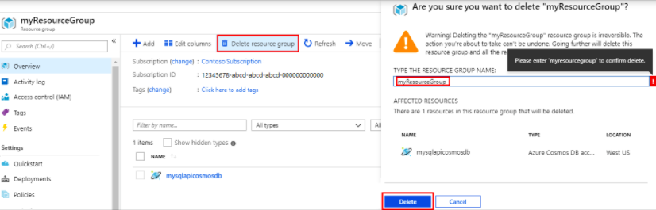
- Enter the name of the resource group you want to delete and select Delete.
Option A is correct. Search and Select Resource Groups in the Azure Portal Search Bar, Select the created resource group, Select Delete Resource Group on the Resource Group Overview Page, Enter the name of the resource group you want to delete, and select Delete is the correct sequence of steps to delete an Azure Cosmo DB account.
Option B is incorrect. 1342 doesn’t form the correct sequence of steps for the deletion of an Azure Cosmo DB account.
Option C is incorrect. 4321 doesn’t form the correct sequence of steps for the deletion of an Azure Cosmo DB account.
Option D is incorrect. 1234 doesn’t form the correct sequence of steps for the deletion of an Azure Cosmo DB account.
Reference: To know more about Cosmo DB Resources, refer to the link below:
https://docs.microsoft.com/en-us/azure/cosmos-db/create-cosmosdb-resources-portal
Question 10
Domain: Describe how to work with non-relational data on Azure
Which of the following characteristics relates closely to NoSQL databases?
A. Cost-effective
B. Fixed schema
C. Complex relationships
D. Limited scalability
Answer 10
Correct Answer: A
NoSQL databases offer distributed computing and provide reliable mechanisms for storage, processing, and analysis of considerably huge amounts of unstructured data. Therefore, they can ensure better cost advantages.
Option A is CORRECT. NoSQL databases are cost-effective as they don’t require normalization on a mandatory basis, and limited focus on ACID (Atomicity, Consistency, Isolation, and Durability) enables easier and flexible management of unstructured data.
Option B is incorrect. NoSQL databases provide support for a flexible schema with capabilities to support unstructured as well as semi-structured data.
Option C is incorrect. NoSQL databases don’t involve complex relationships, such as the relationships between different tables in an RDBMS.
Option D is incorrect. NoSQL databases utilize distributed computing to facilitate higher scalability.
Reference:
To learn more about the characteristics of non-relational data, you can refer to the following documentation.
Question 11
Domain: Describe how to work with non-relational data on Azure
Your organization needs to design a data store that will have Employees data. The data needs to be stored in the below-given format.
| Employee_Id | Employee_Information |
|---|---|
| 1001 | FName: Aron LName: Smith Email: abc@ajopo.com |
| 1002 | FirstName: Ben Last: Stokes Contact: 123-456-389 |
| 1003 | FirstName: David LastName: Hussain |
A. Document
B. Graph
C. Columnar
D. Key/Value
Answer 11
Correct Answer: C
Columnar or column family data store stores the data in form of tables having rows, and dynamic columns. This data store is more flexible than relational databases as here each row does not need to have the same columns. This data store is preferable when there is a need to store a large amount of data and the query patterns are predictable.
Option A is incorrect. A Document data store stores the data in documents in JSON (JavaScript Object Notation) format. Here, each document has pairs of fields and values. A field value can be a scalar item like number or string, or a compound item like parent-child collection or list. A document has complete data for an entity. For example, an entity can have the details of the customer, order placed by that customer, or both. Below is an example of document data store.
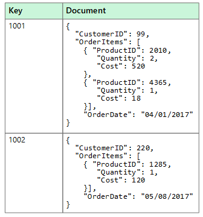
Option B is incorrect. A graph data store provides two types of information in form of nodes and edges. Here, the nodes represent entities, and the edges indicate the relationships among those entities. The following figure shows an example of Graph data store.
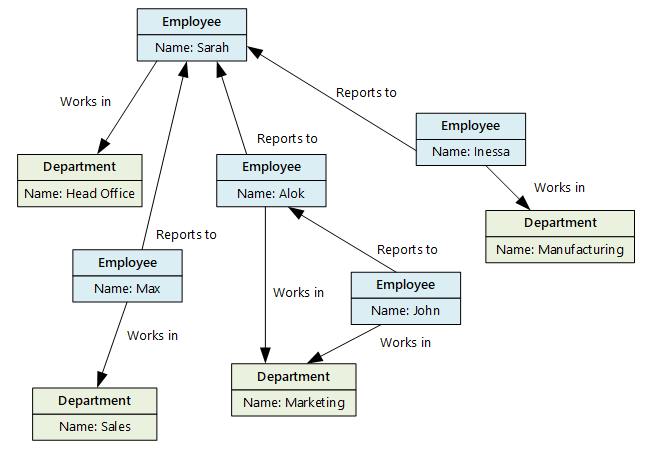
Option C is CORRECT as data is available in the format of a table with rows and columns that is the major feature of columnar data type along with additional flexibility in format.
Option D is incorrect. Key/value store is a kind of large hash table where each data value is associated with a unique key. This key is used to store the data with the help of a hashing function. Below is an example of key-value data store.
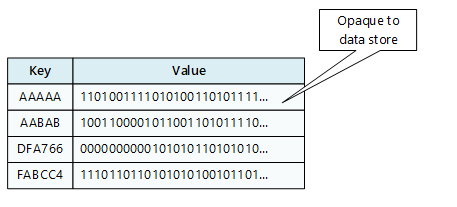
Reference:
To know more about the different type of data stores, please refer to the Azure doc below:
https://docs.microsoft.com/en-us/azure/architecture/data-guide/big-data/non-relational-data
Question 12
Domain: Describe an analytics workload on Azure
Which of the following element of Azure Synapse enables you to access all the Synapse Analytics tools?
A. Synapse Spark pool
B. Synapse pipelines
C. Synapse Link
D. Synapse Studio
Answer 12
Correct Answer: D
Synapse SQL pool, Synapse Spark pool, Synapse Pipelines, Synapse Link, and Synapse Studio are the elements of Azure Synapse. Out of these elements, Synapse Studio is a web user interface that enables the data engineers to access all the Synapse Analytics tools. Synapse Studio can be used for creating SQL and Spark pools, defining and running pipelines, and configuring links to external data sources.
Option A is incorrect. Synapse Spark Pool is the element that supports Azure Machine Learning through integration with the AzureML and SparkML packages.
Option B is incorrect. A Synapse pipeline represents a logical grouping of activities that collectively perform a task. The activities of the pipeline define the actions to be performed on your data.
Option C is incorrect. Synapse Link is the component that enables you to connect to Azure Cosmos DB. It can be used to perform/run near real-time analytics over the operational data stored in an Azure Cosmos DB.
Option D is correct. Synapse Studio is a web user interface that enables data engineers to access all the Synapse Analytics tools. Synapse Studio can be used for creating SQL and Spark pools, defining and running pipelines, and configuring links to external data sources.
Reference:
To know more about the Azure Synapse, please refer to the Azure documentation below:
Question 13
Domain: Describe an analytics workload on Azure
You have retrieved data formatted in a different format from multiple sources. Now, you need to transform the data into a single uniform format. Which of the following data services would you use?
A. Azure Data Factory
B. Azure Data Lake Storage
C. Azure Databricks
D. None of These
Answer 13
Correct Answer: A
Azure Data Factory is a data integration service that allows users to retrieve data from one or multiple data sources, and convert it into the desired format. The various data sources might have different data representation and have a noise that is needed to be filtered out. Azure Data Factory allows to extract only the interesting/required data, and discard the rest. Even if the interesting data is not presented in the required format for processing by other services, it can be transformed into the desired format.
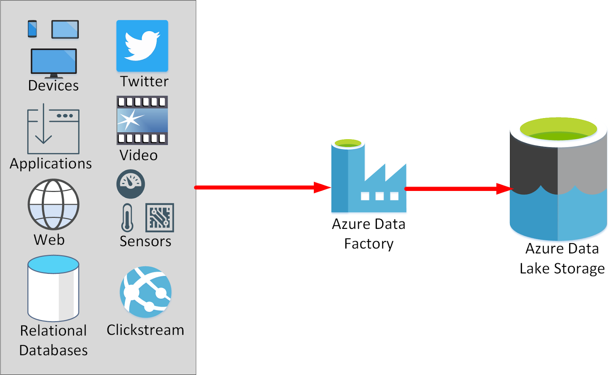
Option A is correct. Azure Data Factory allows transforming the data from multiple sources in the desired uniform format.
Option B is incorrect. Azure Data Lake Storage is a secure cloud platform that offers cost-effective and scalable storage for big data analytics. In an Azure Data Services data warehouse solution, data is generally loaded into Azure Data Lake Storage before it is processed into a structure that supports efficient analysis in Azure Synapse Analytics.
Option C is incorrect. Azure Databricks is an Apache Spark environment that runs on Azure to offer big data processing, streaming, and machine learning.
Option D is incorrect. Azure Data Factory allows users to transform the data from multiple sources in the desired uniform format.
Reference:
To know more about Azure Data Factory, please refer to the Azure documentation below:
Question 14
Domain: Describe an analytics workload on Azure
Which of the following statements is/are true for batch processing? (Select Multiple, 2 answers)
A. It processes a large volume of data all at once
B. data is always processed in real-time
C. There is no or significantly low latency
D. there is an expected latency
Answer 14
Correct Answers: A and D
Batch data processing is an effective method of processing a huge amount of data where a set of transactions is collected over a time period. It involves collecting, entering, and processing data and eventually producing the batch results. In batch processing, latency is common.
Option A is correct. Batch processing processes the large volume of data all at once.
Option B is incorrect. It is real-time data processing that processes the data in real-time.
Option C is incorrect. It is real-time processing where there is no or very low latency.
Option D is correct. In batch processing, there are the expected latencies.
References:
To know more about Batch Data Processing, please refer to the URLs below:
https://www.bmc.com/blogs/what-is-batch-processing-batch-processing-explained/
https://www.7wdata.be/business-analytics/batch-vs-real-time-data-processing/
Question 15
Domain: Describe an analytics workload on Azure
Select the right sequence for implementing the Extract, Load, and Transform (ELT) process.
A. Extract the source data into text files, Prepare the data for loading, Load the data into staging tables with PolyBase or the COPY command, Land the data into Azure Blob storage or Azure Data Lake Store, Transform the data, Insert the data into production tables.
B. Extract the source data into text files, Land the data into Azure Data Lake Store or Azure Blob storage, Prepare the data for loading, Load the data into staging tables with PolyBase or the COPY command, Transform the data, Insert the data into production tables.
C. Extract the source data into text files, Land the data into Azure Blob storage or Azure Data Lake Store, Prepare the data for loading, Load the data into staging tables with PolyBase or the COPY command, Insert the data into production tables, Transform the data.
D. Extract the source data into text files, Prepare the data for loading, Load the data into staging tables with PolyBase or the COPY command, Land the data into Azure Blob storage or Azure Data Lake Store, Insert the data into production tables, Transform the data.
Answer 15
Correct Answer: B
ELT is a process that extracts the data from a source system, loads it into a SQL pool, and then transforms it.
The basic steps for implementing the Extract, Load, and Transform (ELT) process are:
Extract the source data into text files.
Land the data into Azure Data Lake Store or Azure Blob storage.
Prepare the data for loading.
Load the data into staging tables through PolyBase or the COPY command.
Transform the data.
Insert the data into the production tables.
References:
To know more about the implementation of the Extract, Load, and Transform (ELT) process, please refer to the Azure documentation below:
https://docs.microsoft.com/en-us/azure/synapse-analytics/sql-data-warehouse/design-elt-data-loading
Question 16
HOTSPOT -
To complete the sentence, select the appropriate option in the answer area.
Hot Area:
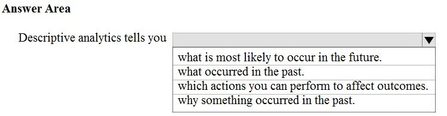
Answer 16
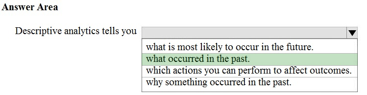
Reference:
Question 17
HOTSPOT -
For each of the following statements, select Yes if the statement is true. Otherwise, select No.
NOTE: Each correct selection is worth one point.
Hot Area:
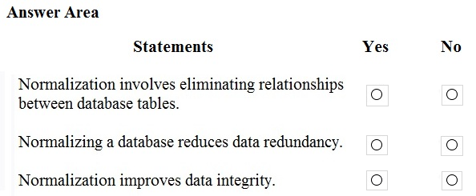
Question 18
HOTSPOT -
To complete the sentence, select the appropriate option in the answer area.
Hot Area:
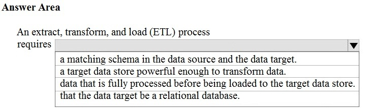
Answer 18
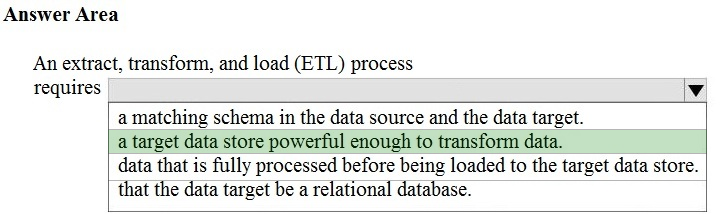
In the ELT pipeline, the transformation occurs in the target data store. ELT only works well when the target system is powerful enough to transform the data efficiently.
Incorrect Answers:
- The data does not need to be fully processed: Often, the three ETL phases are run in parallel to save time. For example, while data is being extracted, a transformation process could be working on data already received and prepare it for loading, and a loading process can begin working on the prepared data, rather than waiting for the entire extraction process to complete.
- The target does need to be a relational database.
Reference:
https://docs.microsoft.com/en-us/azure/architecture/data-guide/relational-data/etl
Question 19
HOTSPOT -
To complete the sentence, select the appropriate option in the answer area.
Hot Area:
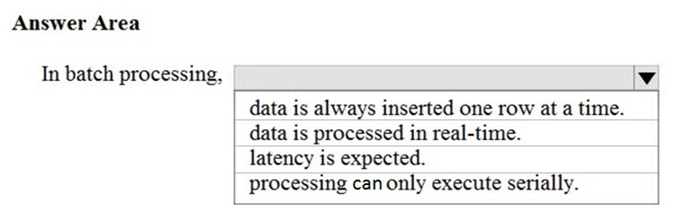
Question 20
HOTSPOT -
To complete the sentence, select the appropriate option in the answer area.
Hot Area:
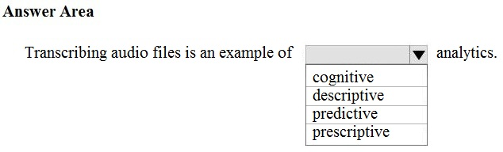
Answer 20
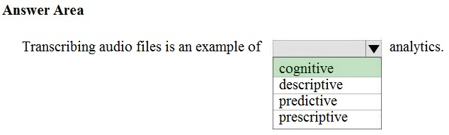
Reference:
https://azure.microsoft.com/en-us/services/cognitive-services/speech-services/
Question 21 (Q6 - Answer ambiguous)
DRAG DROP -
Match the types of analytics that can be used to answer the business questions.
To answer, drag the appropriate analytics type from the column on the left to its question on the right. Each analytics type may be used once, more than once, or not at all.
NOTE: Each correct match is worth one point.
Select and Place:
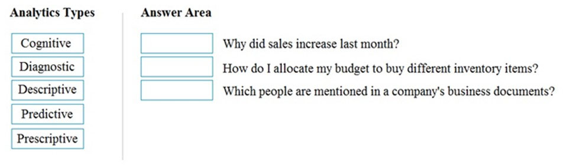
Answer 21
Correct Answer:
Box 1: Diagnostic -
Diagnostic Analytics: At this stage you can begin to answer some of those why questions. Historical data can begin to be measured against other data to answer the question of why something happened in the past. This is the process of gathering and interpreting different data sets to identify anomalies, detect patters, and determine relationships.
Box 2: Prescriptive -
Prescriptive analytics is a combination of data, mathematical models, and various business rules to infer actions to influence future desired outcomes.
Predictive analytics, broadly speaking, is a category of business intelligence that uses descriptive and predictive variables from the past to analyze and identify the likelihood of an unknown future outcome
Box 3: Descriptive -
- Generally speaking, data analytics comes in four types:
- Descriptive, to answer the question: What's happening?
- Diagnostic, to answer the question: Why's happening?
- Predictive, to answer the question: What will happen?
- Prescriptive, to answer the question: What actions should we take?
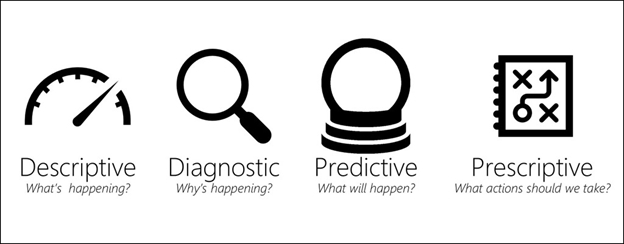
Reference:
Question 22
HOTSPOT -
You have the following JSON document.
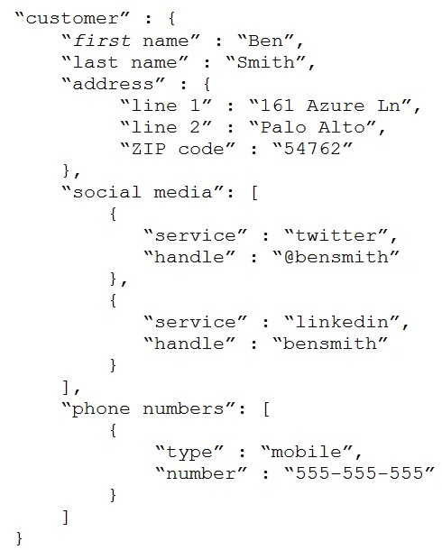
Use the drop-down menus to select the answer choice that completes each statement based on the information presented in the JSON document.
NOTE: Each correct selection is worth one point.
Hot Area:
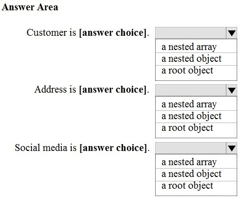
Question 23
HOTSPOT -
You are reviewing the data model shown in the following exhibit.
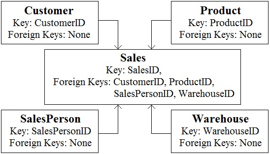
Use the drop-down menus to select the answer choice that completes each statement based on the information presented in the graphic.
NOTE: Each correct selection is worth one point
Hot Area:
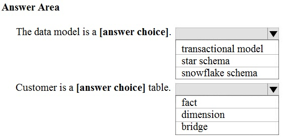
Answer 23
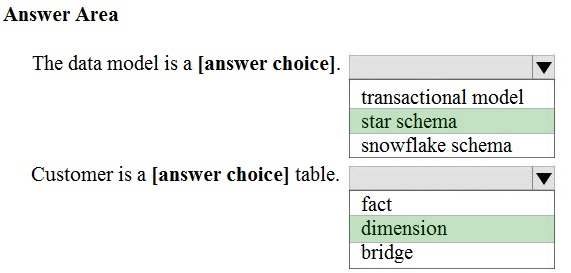
Box 1: star schema -
In computing, the star schema is the simplest style of data mart schema and is the approach most widely used to develop data warehouses and dimensional data marts. The star schema consists of one or more fact tables referencing any number of dimension tables. The star schema is an important special case of the snowflake schema, and is more effective for handling simpler queries.
Example:
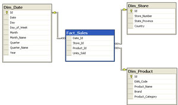
Incorrect Answers:
The data in the question is not normalized.
The snowflake schema is a variation of the star schema, featuring normalization of dimension tables. Example:
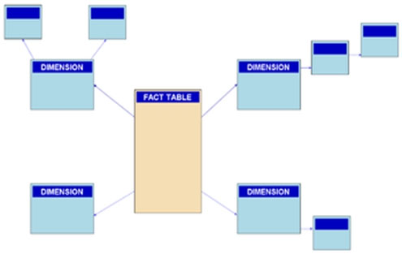
Note: A snowflake schema is a logical arrangement of tables in a multidimensional database such that the entity relationship diagram resembles a snowflake shape. The snowflake schema is represented by centralized fact tables which are connected to multiple dimensions.[citation needed]. "Snowflaking" is a method of normalizing the dimension tables in a star schema. When it is completely normalized along all the dimension tables, the resultant structure resembles a snowflake with the fact table in the middle.
Box 2: dimension -
The star schema consists of one or more fact tables referencing any number of dimension tables.
Reference:
Question 24
HOTSPOT -
To complete the sentence, select the appropriate option in the answer area.
Hot Area:
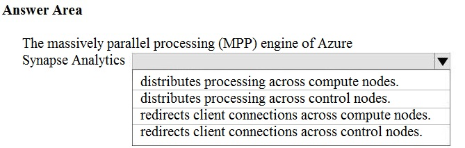
Answer 24
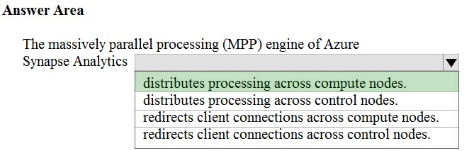
Reference:
Question 25
HOTSPOT -
To complete the sentence, select the appropriate option in the answer area.
Hot Area:
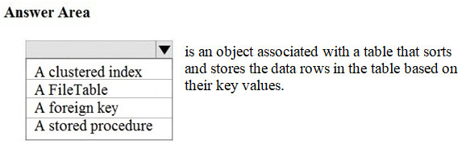
Answer 25
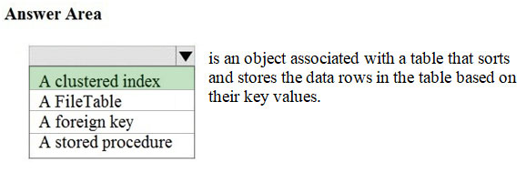
Reference:
Question 26
HOTSPOT -
To complete the sentence, select the appropriate option in the answer area.
Hot Area:
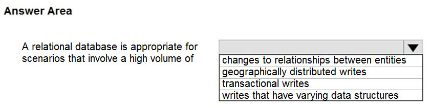
Answer 26
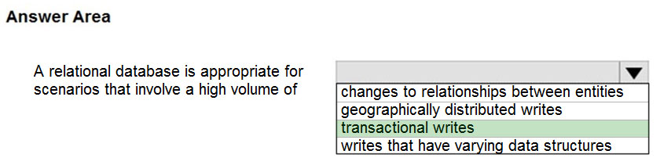
Disadvantages of non-relational databases include: Data Consistency ג€" non-relational databases do not perform ACID transactions.
Note: Relational databases are optimized for writes. They are optimized for consistency and availability. Advantages of relational databases include simplicity, ease of data retrieval, data integrity, and flexibility.
Incorrect Answers:
Use a relational database when data that you work with is structured, and the structure is not subject to frequent changes.
Use Cloud storage (no relational database) for geographically distributed writes.
Reference:
https://towardsdatascience.com/choosing-the-right-database-c45cd3a28f77
Question 27
HOTSPOT -
For each of the following statements, select Yes if the statement is true. Otherwise, select No.
NOTE: Each correct selection is worth one point.
Hot Area:
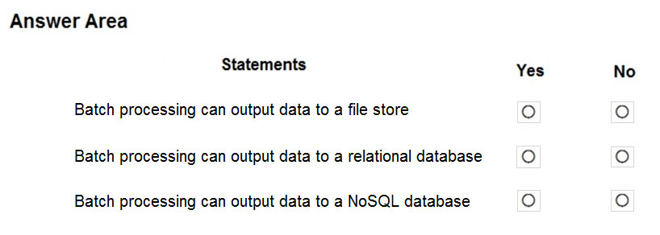
Answer 27
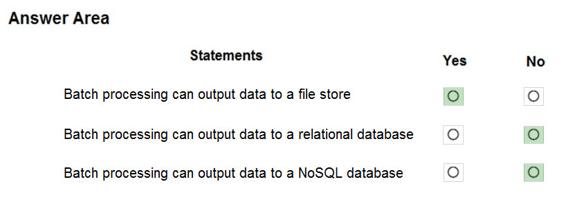
Box 1: Yes -
Big data solutions often use long-running batch jobs to filter, aggregate, and otherwise prepare the data for analysis. Usually these jobs involve reading source files from scalable storage (like HDFS, Azure Data Lake Store, and Azure Storage), processing them, and writing the output to new files in scalable storage.
Box 2: No -
Box 3: No -
Reference:
https://docs.microsoft.com/en-us/azure/architecture/data-guide/big-data/batch-processing
Question 28
DRAG DROP -
Your company plans to load data from a customer relationship management (CRM) system to a data warehouse by using an extract, load, and transform (ELT) process.
Where does data processing occur for each stage of the ELT process? To answer, drag the appropriate locations to the correct stages. Each location may be used once, more than once, or not at all. You may need to drag the split bar between panes or scroll to view content.
NOTE: Each correct selection is worth one point.
Select and Place:
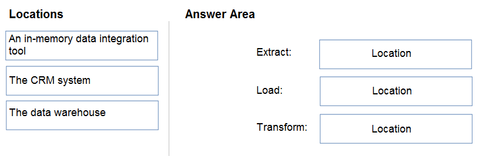
Answer 28
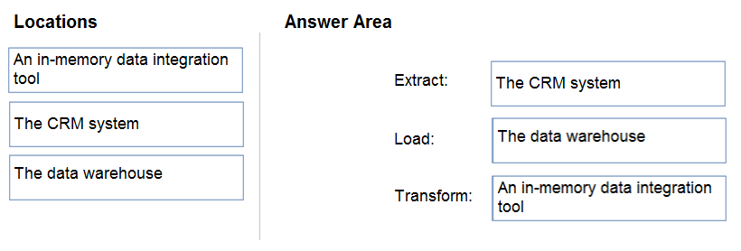
Box 1: The CRM system -
Data is extracted from the CRM system.
Box 2: The data warehouse -
Data is loaded to the data warehouse.
Box 3: An in-memory data integration tool
The data transformation that takes place usually involves various operations, such as filtering, sorting, aggregating, joining data, cleaning data, deduplicating, and validating data.

Reference:
https://docs.microsoft.com/en-us/azure/architecture/data-guide/relational-data/etl
Question 29
HOTSPOT -
To complete the sentence, select the appropriate option in the answer area.
Hot Area:
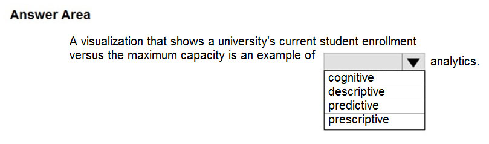
Answer 29
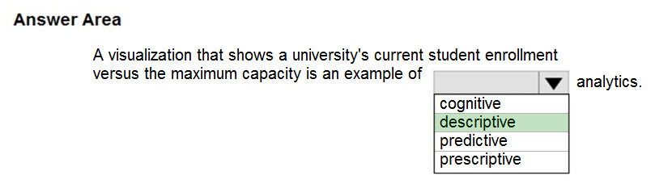
Generally speaking, data analytics comes in four types (Figure 1):
Descriptive, to answer the question: Whatג€™s happening?
Diagnostic, to answer the question: Whyג€™s happening?
Predictive, to answer the question: What will happen?
Prescriptive, to answer the question: What actions should we take?
Reference:
Question 30
DRAG DROP -
Match the types of visualizations to the appropriate descriptions.
To answer, drag the appropriate visualization type from the column on the left to its description on the right. Each visualization type may be used once, more than once, or not at all.
NOTE: Each correct match is worth one point.
Select and Place:
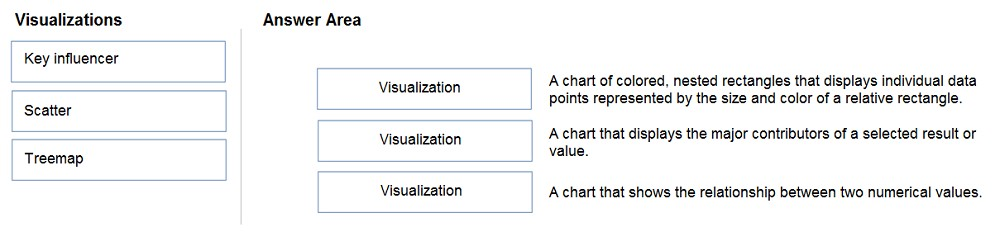
Answer 30
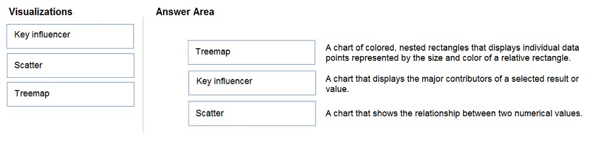
Box 1: Tree map -
Treemaps are charts of colored rectangles, with size representing value. They can be hierarchical, with rectangles nested within the main rectangles.
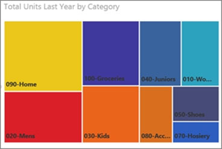
Box 2: Key influencer -
A key influencer chart displays the major contributors to a selected result or value.
Box 3: Scatter -
Scatter and Bubble charts display relationships between 2 (scatter) or 3 (bubble) quantitative measures -- whether or not, in which order, etc.
Question 31
You need to create an Azure Storage account.
Data in the account must replicate outside the Azure region automatically.
Which two types of replication can you use for the storage account? Each correct answer presents a complete solution.
NOTE: Each correct selection is worth one point.
A. zone-redundant storage (ZRS)
B. read-access geo-redundant storage (RA-GRS)
C. locally-redundant storage (LRS)
D. geo-redundant storage (GRS)
Answer 31
Correct Answer: B and D
D: Azure Storage offers two options for copying your data to a secondary region:
- Geo-redundant storage (GRS)
- Geo-zone-redundant storage (GZRS)
B: With GRS or GZRS, the data in the secondary region isn't available for read or write access unless there is a failover to the secondary region. For read access to the secondary region, configure your storage account to use read-access geo-redundant storage (RA-GRS) or read-access geo-zone-redundant storage (RA- GZRS).
Reference:
Question 32
HOTSPOT -
For each of the following statements, select Yes if the statement is true. Otherwise, select No.
NOTE: Each correct selection is worth one point.
Hot Area:
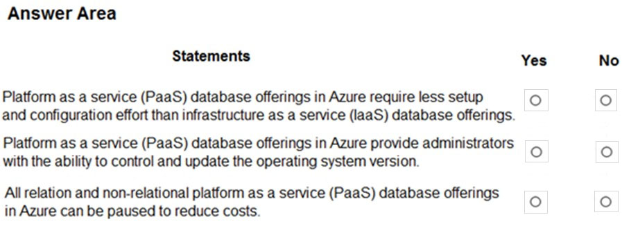
Answer 32
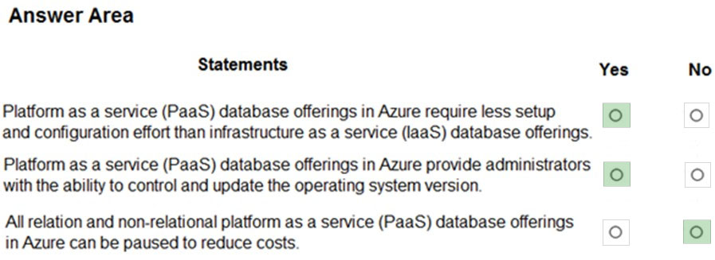
Box 1: Yes -
Like IaaS, PaaS includes infrastructure ג€" servers, storage, and networking ג€" but also middleware, development tools, business intelligence (BI) services, database management systems, and more. PaaS is designed to support the complete web application lifecycle: building, testing, deploying, managing, and updating.
PaaS allows you to avoid the expense and complexity of buying and managing software licenses, the underlying application infrastructure and middleware, container orchestrators such as Kubernetes, or the development tools and other resources
Box 2: Yes -
You manage the applications and services you develop, and the cloud service provider typically manages everything else.
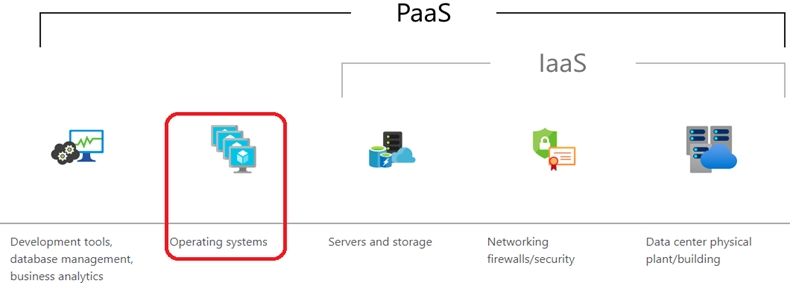
Box 3: No -
There really is no way to pause / stop billing for your Azure SQL Database.
Microsoft's official answer "Yes, you can export your database. Delete the Azure SQL database and that will pause billing. Then when you need it you can create a new database and import your previously exported DB."
Reference:
Question 33
Which statement is an example of Data Manipulation Language (DML)?
A. REVOKE
B. DISABLE
C. INSERT
D. GRANT
Answer 33
Correct Answer: C
Data Manipulation Language (DML) statements:
- DELETE
- INSERT
- UPDATE
Reference:
Question 34
You have a SQL query that combines customer data and order data. The query includes calculated columns.
You need to create a database object that would allow other users to rerun the same SQL query.
What should you create?
A. an index
B. a view
C. a scalar function
D. a table
Answer 34
Correct Answer: B
A view is a virtual table whose contents are defined by a query. A view acts as a filter on the underlying tables referenced in the view. The query that defines the view can be from one or more tables or from other views in the current or other databases.
Reference:
https://docs.microsoft.com/en-us/sql/relational-databases/views/views
Question 35
HOTSPOT -
To complete the sentence, select the appropriate option in the answer area.
Hot Area:
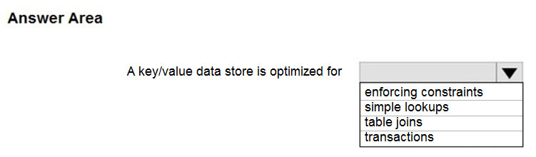
Answer 35
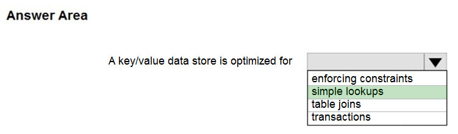
Box 1: simple lookups -
A key/value store associates each data value with a unique key. Most key/value stores only support simple query, insert, and delete operations. To modify a value (either partially or completely), an application must overwrite the existing data for the entire value. In most implementations, reading or writing a single value is an atomic operation.
An application can store arbitrary data as a set of values. Any schema information must be provided by the application. The key/value store simply retrieves or stores the value by key.
Reference:
https://docs.microsoft.com/en-us/azure/architecture/guide/technology-choices/data-store-overview
Question 36
DRAG DROP -
Match the types of data to the appropriate Azure data services.
To answer, drag the appropriate data type from the column on the left to its service on the right. Each data type may be used once, more than once, or not at all.
NOTE: Each correct match is worth one point.
Select and Place:
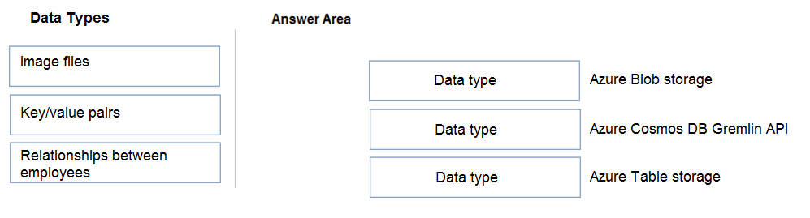
Answer 36
Box 1: Image files -
Azure Blob storage is suitable for image files.
Box 2: Key/value pairs -
Azure CosmosDB table API is a key-value storage hosted in the cloud.
Box 3: Relationship between employees
One-to-many relationships between business domain objects occur frequently: for example, one department has many employees. There are several ways to implement one-to-many relationships in the Azure Table service.
Reference:
https://docs.microsoft.com/en-us/azure/storage/tables/table-storage-design-modeling
Question 37
DRAG DROP -
Match the Azure Data Lake Storage Gen2 terms to the appropriate levels in the hierarchy.
To answer, drag the appropriate term from the column on the left to its level on the right. Each term may be used once, more than once, or not at all.
NOTE: Each correct match is worth one point.
Select and Place:
Answer 37
Box 1: Azure Storage account -
Azure file shares are deployed into storage accounts, which are top-level objects that represent a shared pool of storage.
Box 2: File share -
Reference:
https://docs.microsoft.com/en-us/azure/storage/files/storage-how-to-create-file-share
Question 38
What are two characteristics of real-time data processing? Each correct answer presents a complete solution.
NOTE: Each correct selection is worth one point.
A. Data is processed periodically
B. Low latency is expected
C. High latency is acceptable
D. Data is processed as it is created
Answer 38
Correct Answer: B and D
Real time processing deals with streams of data that are captured in real-time and processed with minimal latency to generate real-time (or near-real-time) reports or automated responses.
Reference:
https://docs.microsoft.com/en-us/azure/architecture/data-guide/big-data/real-time-processing
Question 39
DRAG DROP -
Match the Azure Data Factory components to the appropriate descriptions.
To answer, drag the appropriate component from the column on the left to its description on the right. Each component may be used once, more than once, or not at all.
NOTE: Each correct match is worth one point.
Select and Place:
Answer 39
Box 1: Dataset -
Datasets must be created from paths in Azure datastores or public web URLs, for the data to be accessible by Azure Machine Learning.
Box 2: Linked service -
Linked services are much like connection strings, which define the connection information needed for Data Factory to connect to external resources.
Box 3: Pipeline -
A pipeline is a logical grouping of activities that together perform a task.
Reference:
Question 40
DRAG DROP -
Match the types of workloads to the appropriate scenarios.
To answer, drag the appropriate workload type from the column on the left to its scenario on the right. Each workload type may be used once, more than once, or not at all.
NOTE: Each correct match is worth one point.
Select and Place:
Answer 40
Box 1: Batch -
Batch processing refers to the processing of blocks of data that have already been stored over a period of time.
Box 2: Streaming -
Stream processing is a big data technology that allows us to process data in real-time as they arrive and detect conditions within a small period of time from the point of receiving the data. It allows us to feed data into analytics tools as soon as they get generated and get instant analytics results.
Box 3: Batch -
Reference:
https://docs.microsoft.com/en-us/azure/architecture/data-guide/technology-choices/batch-processing
Question 41
DRAG DROP -
Your company plans to load data from a customer relationship management (CRM) system to a data warehouse by using an extract, load, and transform (ELT) process.
Where does data processing occur for each stage of the ELT process? To answer, drag the appropriate locations to the correct stages. Each location may be used once, more than once, or not at all. You may need to drag the split bar between panes or scroll to view content.
NOTE: Each correct selection is worth one point.
Select and Place:
Answer 41
Box 1: The CRM system -
Data is extracted from the CRM system.
Box 2: The data warehouse -
Data is loaded to the data warehouse.
Box 3: A standalone data analysis tool
The data transformation that takes place usually involves various operations, such as filtering, sorting, aggregating, joining data, cleaning data, deduplicating, and validating data.
Reference:
https://docs.microsoft.com/en-us/azure/architecture/data-guide/relational-data/etl
Question 42
Your company recently reported sales from the third quarter.
You have the chart shown in the following exhibit.
Which type of analysis is shown in the fourth quarter?
A. predictive
B. prescriptive
C. descriptive
D. diagnostic
Answer 42
Correct Answer: A
Predictive, to answer the question: What will happen?
Reference:
Question 43
Which statement is an example of Data Manipulation Language (DML)?
A. REVOKE
B. DISABLE
C. CREATE
D. UPDATE
Answer 43
Correct Answer: D
Data Manipulation Language (DML) affect the information stored in the database. Use these statements to insert, update, and change the rows in the database.
BULK INSERT -
DELETE -
INSERT -
SELECT -
UPDATE -
MERGE -
Reference:
https://docs.microsoft.com/en-us/sql/t-sql/statements/statements
Question 44
HOTSPOT -
To complete the sentence, select the appropriate option in the answer area.
Hot Area:
Answer 44
Descriptive, to answer the question: What's happening?
Note: Azure Media Indexer enables you to make content of your media files searchable and to generate a full-text transcript for closed captioning and keywords.
You can process one media file or multiple media files in a batch.
Reference:
https://docs.microsoft.com/en-us/azure/media-services/previous/media-services-index-content
Question 45
HOTSPOT -
To complete the sentence, select the appropriate option in the answer area.
Hot Area:
Answer 45
Generally speaking, data analytics comes in four types:
- Descriptive, to answer the question: What's happening?
- Diagnostic, to answer the question: Why's happening?
- Predictive, to answer the question: What will happen?
- Prescriptive, to answer the question: What actions should we take?
Reference:
Question 46
HOTSPOT -
To complete the sentence, select the appropriate option in the answer area.
Hot Area:
Answer 46
With ELT, the data store used to perform the transformation is the same data store where the data is ultimately consumed.
Reference:
https://docs.microsoft.com/en-us/azure/architecture/data-guide/relational-data/etl
Question 47
You need to create an Azure resource to store data in Azure Table storage.
Which command should you run?
A. az storage share create
B. az storage account create
C. az cosmosdb create
D. az storage container create
Answer 47
Correct Answer: D
Reference:
https://docs.microsoft.com/en-us/cli/azure/storage/container?view=azure-cli-latest
Question 48
HOTSPOT -
To complete the sentence, select the appropriate option in the answer area.
Hot Area:
Answer 48
Azure Cosmos DB SQL API accounts provide support for querying items using the Structured Query Language (SQL) syntax.
Reference:
Question 49
You need to modify a view in a relational database by adding a new column.
Which statement should you use?
A. MERGE
B. ALTER
C. INSERT
D. UPDATE
Answer 49
Correct Answer: B
Question 50
HOTSPOT -
For each of the following statements, select Yes if the statement is true. Otherwise, select No.
NOTE: Each correct selection is worth one point.
Hot Area:
Answer 50
Reference:
https://docs.microsoft.com/en-us/azure/architecture/data-guide/relational-data/etl
Question 51
HOTSPOT -
You plan to deploy a PostgreSQL database to Azure.
Which hosting model corresponds to the available deployment options? To answer, select the appropriate options in the answer area.
NOTE: Each correct selection is worth one point.
Hot Area:
Question 52
HOTSPOT -
To complete the sentence, select the appropriate option in the answer area.
Hot Area:
Answer 52
Question 53
Which Azure storage solution provides native support for POSIX-compliant access control lists (ACLs)?
A. Azure Table storage
B. Azure Data Lake Storage
C. Azure Queue storage
D. Azure Files
Answer 53
Correct Answer: B
Reference:
https://docs.microsoft.com/en-us/azure/storage/blobs/data-lake-storage-access-control
Question 54
HOTSPOT -
To complete the sentence, select the appropriate option in the answer area.
Hot Area:
Answer 54
Question 55
HOTSPOT -
To complete the sentence, select the appropriate option in the answer area.
Hot Area:
Answer 55
Reference:
Question 56
HOTSPOT -
To complete the sentence, select the appropriate option in the answer area.
Hot Area:
Answer 56
Reference:
Question 57
You have an inventory management database that contains the following table.
Which statement should you use in a SQL query to change the inventory quantity of Product1 to 270?
A. INSERT
B. MERGE
C. UPDATE
D. CREATE
Answer 57
Correct Answer: C
Reference:
https://docs.microsoft.com/en-us/sql/t-sql/queries/update-transact-sql?view=sql-server-ver15
Question 58
Your company needs to implement a relational database in Azure. The solution must minimize ongoing maintenance.
Which Azure service should you use?
A. Azure HDInsight
B. Azure SQL Database
C. Azure Cosmos DB
D. SQL Server on Azure virtual machines
Answer 58
Correct Answer: B
Reference:
https://azure.microsoft.com/en-us/services/sql-database/#features
Question 59
You are writing a set of SQL queries that administrators will use to troubleshoot an Azure SQL database.
You need to embed documents and query results into a SQL notebook.
What should you use?
A. Microsoft SQL Server Management Studio (SSMS)
B. Azure Data Studio
C. Azure CLI
D. Azure PowerShell
Answer 59
Correct Answer: B
Reference:
https://www.mssqltips.com/sqlservertip/5997/create-sql-server-notebooks-in-azure-data-studio/
Question 60
DRAG DROP -
Match the terms to the appropriate descriptions.
To answer, drag the appropriate term from the column on the left to its description on the right. Each term may be used once, more than once, or not at all.
NOTE: Each correct match is worth one point.
Select and Place:
Question 61
You have an e-commerce application that reads and writes data to an Azure SQL database.
Which type of processing does the application use?
A. stream processing
B. batch processing
C. Online Analytical Processing (OLAP)
D. Online Transaction Processing (OLTP)
Answer 61
Correct Answer: D
OLTP is designed to serve as a persistent data store for business or front-end applications. OLTP administers day to day transaction of an organization.
Reference:
Question 62
When can you use an Azure Resource Manager template?
A. to automate the creation of an interdependent group of Azure resources in a repeatable way
B. to apply Azure policies for multi-tenant deployments
C. to provision Azure subscriptions
D. to control which services and feature administrators and developers can deploy from the Azure portal
Answer 62
Correct Answer: A
You can automate deployments and use the practice of infrastructure as code. In code, you define the infrastructure that needs to be deployed
To implement infrastructure as code for your Azure solutions, use Azure Resource Manager templates (ARM templates). The template is a JavaScript Object
Notation (JSON) file that defines the infrastructure and configuration for your project. The template uses declarative syntax, which lets you state what you intend to deploy without having to write the sequence of programming commands to create it. In the template, you specify the resources to deploy and the properties for those resources.
Reference:
https://docs.microsoft.com/en-us/azure/azure-resource-manager/templates/overview
Question 63
You have an Azure SQL database that you access directly from the Internet.
You recently changed your external IP address.
After changing the IP address, you can no longer access the database. You can connect to other resources in Azure.
What is a possible cause of the issue?
A. role-based access control (RBAC)
B. Dynamic Host Configuration Protocol (DHCP)
C. Domain Name Service (DNS)
D. a database-level firewall
Answer 63
Correct Answer: D
The Azure SQL Database firewall lets you decide which IP addresses may or may not have access to either your Azure SQL Server or your Azure SQL database.
When creating an Azure SQL Database, the firewall needs to be configured before anyone will be able to access the database. By default, no external access to your SQL Database will be allowed until you explicitly assign permission by creating a firewall rule.
Reference:
https://www.sqlshack.com/configuring-the-azure-sql-database-firewall/
Question 64
DRAG DROP -
Match the tools to the appropriate descriptions.
To answer, drag the appropriate tool from the column on the left to its description on the right. Each tool may be used once, more than once, or not at all.
Select and Place:
Answer 64
Box 1: Microsoft SQL Server Management Studio (SSMS)
SQL Server Management Studio (SSMS) is an integrated environment for managing any SQL infrastructure, from SQL Server to Azure SQL Database.
Box 2: Microsoft Visual Studio Code
Visual Studio Code is a streamlined code editor with support for development operations like debugging, task running, and version control. It aims to provide just the tools a developer needs for a quick code-build-debug cycle and leaves more complex workflows to fuller featured IDEs, such as Visual Studio IDE.
Box 3: Azure Data Studio -
Azure Data Studio offers a modern, keyboard-focused SQL coding experience that makes your everyday tasks easier with built-in features, such as multiple tab windows, a rich SQL editor, IntelliSense, keyword completion, code snippets, code navigation, and source control integration (Git). Run on-demand SQL queries, view and save results as text, JSON, or Excel. Edit data, organize your favorite database connections, and browse database objects in a familiar object browsing experience.
Box 4: Microsoft SQL Server Data Tools (SSDT)
SQL Server Data Tools (SSDT) is a modern development tool for building SQL Server relational databases, databases in Azure SQL, Analysis Services (AS) data models, Integration Services (IS) packages, and Reporting Services (RS) reports. With SSDT, you can design and deploy any SQL Server content type with the same ease as you would develop an application in Visual Studio.
Reference:
https://docs.microsoft.com/en-us/sql/ssms/download-sql-server-management-studio-ssms
https://code.visualstudio.com/docs/supporting/FAQ
https://docs.microsoft.com/en-us/sql/azure-data-studio/what-is-azure-data-studio
https://docs.microsoft.com/en-us/sql/ssdt/download-sql-server-data-tools-ssdt
Question 65
HOTSPOT -
For each of the following statements, select Yes if the statement is true. Otherwise, select No.
NOTE: Each correct selection is worth one point.
Hot Area:
Answer 65
Box 1: Yes -
Tables are database objects that contain all the data in a database. In tables, data is logically organized in a row-and-column format similar to a spreadsheet.
Each row represents a unique record, and each column represents a field in the record.
Box 2: No -
An index is an on-disk structure associated with a table or view that speeds retrieval of rows from the table or view.
Box 3: Yes -
A view is a virtual table whose contents are defined by a query. Like a table, a view consists of a set of named columns and rows of data.
Reference:
https://docs.microsoft.com/en-us/sql/relational-databases/tables/tables
https://docs.microsoft.com/en-us/sql/relational-databases/views/views?view=sql-server-ver15
Question 66
Which command-line tool can you use to query Azure SQL databases?
A. sqlcmd
B. bcp
C. azdata
D. Azure CLI
Answer 66
Correct Answer: A
The sqlcmd utility lets you enter Transact-SQL statements, system procedures, and script files at the command prompt.
Incorrect Answers:
B: The bulk copy program utility (bcp) bulk copies data between an instance of Microsoft SQL Server and a data file in a user-specified format.
D: The Azure CLI is the defacto tool for cross-platform and command-line tools for building and managing Azure resources.
Reference:
https://docs.microsoft.com/en-us/sql/tools/overview-sql-tools?view=sql-server-ver15
Question 67
HOTSPOT -
For each of the following statements, select Yes if the statement is true. Otherwise, select No.
NOTE: Each correct selection is worth one point.
Hot Area:
Answer 67
Box 1: Yes -
Box 2: Yes -
Box 3: Yes -
Azure Defender provides security alerts and advanced threat protection for virtual machines, SQL databases, containers, web applications, your network, and more.
Azure Defender provides security alerts and advanced threat protection for virtual machines, SQL databases, containers, web applications, your network, and more.
Reference:
https://docs.microsoft.com/en-us/azure/azure-sql/database/sql-database-paas-overview
https://docs.microsoft.com/en-us/azure/security-center/azure-defender
Question 68
HOTSPOT -
For each of the following statements, select Yes if the statement is true. Otherwise, select No.
NOTE: Each correct selection is worth one point.
Hot Area:
Question 69
HOTSPOT -
For each of the following statements, select Yes if the statement is true. Otherwise, select No.
NOTE: Each correct selection is worth one point.
Hot Area:
Answer 69
Reference:
https://docs.microsoft.com/en-us/azure/azure-sql/database/sql-database-paas-overview
Question 70
HOTSPOT -
You have the following SQL query.
What are dbo.Products and ProductName? To answer, select the appropriate options in the answer area.
NOTE: Each correct selection is worth one point.
Hot Area:
Answer 70
Question 71
HOTSPOT -
For each of the following statements, select Yes if the statement is true. Otherwise, select No.
NOTE: Each correct selection is worth one point.
Hot Area:
Answer 71
Reference:
https://azure.microsoft.com/en-gb/blog/hot-patching-sql-server-engine-in-azure-sql-database/
https://azure.microsoft.com/en-us/services/sql-database/#product-overview
Question 72
Which statement is an example of Data Definition Language (DDL)?
A. SELECT
B. JOIN
C. UPDATE
D. CREATE
Answer 72
Correct Answer: D
Data Definition Language (DDL) statements defines data structures. Use these statements to create, alter, or drop data structures in a database. These statements include:
- ALTER
- Collations
- CREATE
- DROP
- DISABLE TRIGGER
- ENABLE TRIGGER
- RENAME
- UPDATE STATISTICS
- TRUNCATE TABLE
Reference:
https://docs.microsoft.com/en-us/sql/t-sql/statements/statements
Question 73
HOTSPOT -
For each of the following statements, select Yes if the statement is true. Otherwise, select No.
NOTE: Each correct selection is worth one point.
Hot Area:
Answer 73
Box 1: Yes -
Azure Data Studio is a cross-platform database tool for data professionals using on-premises and cloud data platforms on Windows, macOS, and Linux.
You can use Azure Data Studio to connect to an Azure SQL Database server. You'll then run Transact-SQL (T-SQL) statements to create and query Azure SQL databases.
Box 2: No -
SQL Server Management Studio is for configuring, managing, and administering all components within Microsoft SQL Server, not to create SQL notebooks.
Instead use Azure Data Studio to create SQL notebook.
Box 3: Yes -
You can use the Azure Data Studio to restore databases.
Reference:
https://docs.microsoft.com/en-us/sql/azure-data-studio/what-is-azure-data-studio
Question 74
You are deploying a software as a service (SaaS) application that requires a relational database for Online Transaction Processing (OLTP).
Which Azure service should you use to support the application?
A. Azure Cosmos DB
B. Azure HDInsight
C. Azure SQL Database
D. Azure Synapse Analytics
Answer 74
Correct Answer: C
Azure SQL Database is relational database and a managed service.
Incorrect Answers:
A, B: Cosmos DB, HDInsight are non-relational databases.
D: Azure Synapse Analytics is for data warehousing, not for Online Transaction Processing
Reference:
https://cloud.netapp.com/blog/azure-cvo-blg-azure-database-review-your-guide-for-database-assessment
Question 75
What are two benefits of platform as a service (PaaS) relational database offerings in Azure, such as Azure SQL Database? Each correct answer presents a complete solution.
NOTE: Each correct selection is worth one point.
A. access to the latest features
B. complete control over backup and restore processes
C. in-database machine learning services
D. reduced administrative effort for managing the server infrastructure
Answer 75
Correct Answer: A and D
A: Azure SQL Database is a fully managed platform as a service (PaaS) database engine that handles most of the database management functions such as upgrading, patching, backups, and monitoring without user involvement.
D: SQL Database delivers predictable performance with multiple resource types, service tiers, and compute sizes. It provides dynamic scalability with no downtime, built-in intelligent optimization, global scalability and availability, and advanced security options. These capabilities allow you to focus on rapid app development and accelerating your time-to-market, rather than on managing virtual machines and infrastructure.
Reference:
https://docs.microsoft.com/en-us/azure/azure-sql/database/sql-database-paas-overview
Question 76
HOTSPOT -
For each of the following statements, select Yes if the statement is true. Otherwise, select No.
NOTE: Each correct selection is worth one point.
Hot Area:
Answer 76
Box 1: No -
Microsoft handles all patching and updating of the SQL and operating system code. You don't have to manage the underlying infrastructure.
Box 2: Yes -
SQL Database is a fully managed service that has built-in high availability, backups, and other common maintenance operations.
Box 3: No -
Reference:
https://docs.microsoft.com/en-us/azure/azure-sql/database/sql-database-paas-overview
Question 77
DRAG DROP -
You have a table named Sales that contains the following data.
You need to query the table to return the average sales amount per day. The output must produce the following results.
How should you complete the query? To answer, drag the appropriate values to the correct targets. Each value may be used once, more than once, or not at all.
You may need to drag the split bar between panes or scroll to view content.
NOTE: Each correct selection is worth one point.
Select and Place:
Answer 77
Box 1: SELECT -
Box 2: GROUP BY -
Example:
When used with a GROUP BY clause, each aggregate function produces a single value covering each group, instead of a single value covering the whole table.
The following example produces summary values for each sales territory in the AdventureWorks2012 database. The summary lists the average bonus received by the sales people in each territory, and the sum of year-to-date sales for each territory.
SELECT TerritoryID, AVG(Bonus)as 'Average bonus', SUM(SalesYTD) as 'YTD sales'
FROM Sales.SalesPerson -
GROUP BY TerritoryID;
Reference:
https://docs.microsoft.com/en-us/sql/t-sql/functions/avg-transact-sql
Question 78
When you create an Azure SQL database, which account can always connect to the database?
A. the Azure Active Directory (Azure AD) account that created the database
B. the server admin login account of the logical server
C. the Azure Active Directory (Azure AD) administrator account
D. the sa account
Answer 78
Correct Answer: B
When you first deploy Azure SQL, you specify an admin login and an associated password for that login. This administrative account is called Server admin.
Reference:
https://docs.microsoft.com/en-us/azure/azure-sql/database/single-database-create-quickstart
Question 79
Which statement is an example of Data Definition Language (DDL)?
A. SELECT
B. INSERT
C. DELETE
D. DROP
Answer 79
Correct Answer: D
Data Definition Language (DDL) statements defines data structures. Use these statements to create, alter, or drop data structures in a database. These statements include:
- ALTER
- Collations
- CREATE
- DROP
- DISABLE TRIGGER
- ENABLE TRIGGER
- RENAME
- UPDATE STATISTICS
- TRUNCATE TABLE
Reference:
https://docs.microsoft.com/en-us/sql/t-sql/statements/statements
Question 80
A team of developers has computers that run Windows 10 and Ubuntu Desktop.
The developers need to connect to and query an Azure SQL database from each of their computers. The developers require code assistance features such as IntelliSense.
What should the developers use?
A. sqlcmd
B. Microsoft SQL Server Management Studio (SSMS)
C. Azure Data Studio
D. Azure Data Explorer
Answer 80
Correct Answer: C
Azure Data Studio is a cross-platform database tool for data professionals who use on-premises and cloud data platforms on Windows, macOS, and Linux.
Azure Data Studio offers a modern editor experience with IntelliSense, code snippets, source control integration, and an integrated terminal.
Reference:
https://docs.microsoft.com/en-us/sql/azure-data-studio/download-azure-data-studio
Question 81
HOTSPOT -
To complete the sentence, select the appropriate option in the answer area.
Hot Area:
Answer 81
Question 82
Topic 1
You need to ensure that users use multi-factor authentication (MFA) when connecting to an Azure SQL database.
Which type of authentication should you use?
A. service principal authentication
B. Azure Active Directory (Azure AD) authentication
C. SQL authentication
D. certificate authentication
Answer 82
Correct Answer: B
Reference:
https://docs.microsoft.com/en-us/azure/azure-sql/database/authentication-mfa-ssms-overview
Question 83
What is a benefit of hosting a database on Azure SQL managed instance as compared to an Azure SQL database?
A. built-in high availability
B. native support for cross-database queries and transactions
C. system-initiated automatic backups
D. support for encryption at rest
Answer 83
Correct Answer: B
Reference:
https://docs.microsoft.com/en-us/azure/azure-sql/database/features-comparison
Question 84
HOTSPOT -
To complete the sentence, select the appropriate option in the answer area.
Hot Area:
Answer 84
When you create a new server in Azure SQL Database or Azure Synapse Analytics named mysqlserver, for example, a server-level firewall blocks all access to the public endpoint for the server
Reference:
https://docs.microsoft.com/en-us/azure/security/fundamentals/infrastructure-sql
Question 85
You need to design and model a database by using a graphical tool that supports project-oriented offline database development.
What should you use?
A. Microsoft SQL Server Data Tools (SSDT)
B. Microsoft SQL Server Management Studio (SSMS)
C. Azure Databricks
D. Azure Data Studio
Answer 85
Correct Answer: A
Reference:
Question 86
DRAG DROP -
Match the security components to the appropriate scenarios.
To answer, drag the appropriate component from the column on the left to its scenario on the right. Each component may be used once, more than once, or not at all.
NOTE: Each correct match is worth one point.
Select and Place:
Answer 86
Reference:
https://docs.microsoft.com/en-us/azure/azure-sql/database/authentication-aad-overview
Question 87
You have a transactional application that stores data in an Azure SQL managed instance.
When should you implement a read-only database replica?
A. You need to generate reports without affecting the transactional workload.
B. You need to audit the transactional application.
C. You need to implement high availability in the event of a regional outage.
D. You need to improve the recovery point objective (RPO).
Answer 87
Correct Answer: A
Use read-only replicas to offload read-only query workloads.
Reference:
https://docs.microsoft.com/en-us/azure/azure-sql/database/read-scale-out
Question 88
HOTSPOT -
To complete the sentence, select the appropriate option in the answer area.
Hot Area:
Answer 88
Question 89
HOTSPOT -
To complete the sentence, select the appropriate option in the answer area.
Hot Area:
Question 90
HOTSPOT -
To complete the sentence, select the appropriate option in the answer area.
Hot Area:
Question 91
You need to query a table named Products in an Azure SQL database.
Which three requirements must be met to query the table from the internet? Each correct answer presents part of the solution. (Choose three.)
NOTE: Each correct selection is worth one point. (3 answers)
A. You must be assigned the Reader role for the resource group that contains the database.
B. You must have SELECT access to the Products table.
C. You must have a user in the database.
D. You must be assigned the Contributor role for the resource group that contains the database.
E. Your IP address must be allowed to connect to the database.
Answer 91
Correct Answer: B, C, and E
Incorrect Answers:
A, D: Resource group permissions is not required to query an Azure SQL database table.
Reference:
Question 92
DRAG DROP -
Match the types of data stores to the appropriate scenarios.
To answer, drag the appropriate data store type from the column on the left to its scenario on the right. Each data store type may be used once, more than once, or not at all.
NOTE: Each correct match is worth one point.
Select and Place:
Answer 92
Reference:
https://docs.microsoft.com/en-us/azure/architecture/guide/technology-choices/data-store-overview
Question 93
You have an Azure Cosmos DB account that uses the Core (SQL) API.
Which two settings can you configure at the container level? Each correct answer presents a complete solution. (Choose two)
NOTE: Each correct selection is worth one point.
A. the throughput
B. the read region
C. the partition key
D. the API
Answer 93
Correct Answer: A and C
Reference:
https://www.sqlshack.com/start-your-journey-with-azure-cosmos-db/
Question 94
Your company is designing a data store that will contain student data. The data has the following format.
Which type of data store should you use?
A. graph
B. key/value
C. object
D. columnar
Answer 94
Correct Answer: D
Question 95
Which storage solution supports role-based access control (RBAC) at the file and folder level?
A. Azure Disk Storage
B. Azure Data Lake Storage
C. Azure Blob storage
D. Azure Queue storage
Answer 95
Correct Answer: B
Reference:
https://docs.microsoft.com/en-us/azure/storage/blobs/data-lake-storage-access-control
Question 96
You need to store data in Azure Blob storage for seven years to meet your company's compliance requirements. The retrieval time of the data is unimportant. The solution must minimize storage costs.
Which storage tier should you use?
A. Archive
B. Hot
C. Cool
Answer 96
Correct Answer: A
Reference:
https://cloud.netapp.com/blog/azure-blob-storage-pricing-the-complete-guide-azure-cvo-blg#H1_4
Question 97
Which type of non-relational data store supports a flexible schema, stores data as JSON files, and stores the all the data for an entity in the same document?
A. document
B. columnar
C. graph
D. time series
Answer 97
Correct Answer: A
Question 98
DRAG DROP -
Match the Azure Cosmos DB APIs to the appropriate data structures.
To answer, drag the appropriate API from the column on the left to its data structure on the right. Each API may be used once, more than once, or not at all.
NOTE: Each correct match is worth one point.
Select and Place:
Question 99
HOTSPOT -
To complete the sentence, select the appropriate option in the answer area.
Hot Area:
Answer 99
Reference:
https://docs.microsoft.com/en-us/azure/storage/blobs/data-lake-storage-namespace
Question 100
Answer 100
Question 101
Answer 101
Question 102
Answer 102
Question 103
Answer 103
Question 104
Answer 104
Question 105
Answer 105
Question 106
Answer 106
Question 107
Answer 107
Question 108
Answer 108
Question 109
Answer 109
Question 110
Answer 110
Question 111
Answer 111
Question 112
Answer 112
Question 113
Answer 113
Question 114
Answer 114
Question 115
Answer 115
Question 116
Answer 116
Question 117
Answer 117
Question 118
Answer 118
Question 119
Answer 119
Question 120
Answer 120
Question 121
Answer 121
Question 122
Answer 122
Question 123
Answer 123
Question 124
Answer 124
Question 125
Answer 125
Question 126
Answer 126
Question 127
Answer 127
Question 128
Answer 128
Question 129
Answer 129
Question 130
Answer 130
Question 131
Answer 131
Question 132
Answer 132
Question 133
Answer 133
Question 134
Answer 134
Question 135
Answer 135
Question 136
Answer 136
Question 137
Answer 137
Question 138
Answer 138
Question 139
Answer 139
Question 140
Answer 140
Question 141
Answer 141
Question 142
Answer 142
Question 143
Answer 143
Question 144
Answer 144
Question 145
Answer 145
Question 146
Answer 146
Question 147
Answer 147
Question 148
Answer 148
Question 149
Answer 149
Question 150
Answer 150
Question 151
Answer 151
Question 152
Answer 152
Question 153
Answer 153
Question 154
Answer 154
Question 155
Answer 155
Question 156
Answer 156
Question 157
Answer 157
Question 158
Answer 158
Question 158
Answer 158
Question 159
Answer 159
Question 160
Answer 160
Question 161
Answer 161
Question 164
Answer 162
Question 163
Answer 163
Question 164
Answer 164
Question 165
Answer 165
Question 166
Answer 166
Question 167
Answer 167
Question 168
Answer 168
Question 169
Answer 169
Question 170
Answer 170
Question 171
Answer 171
Question 172
Answer 172
Question 173
Answer 173
Question 174
Answer 174
Question 175
Answer 175
Question 176
Answer 176
Question 177
Answer 177
Question 178
Answer 178
Question 179
Answer 179
Question 180
Answer 180
Question 181
Answer 181
Question 182
Answer 182
Question 183
Answer 183
References
- Question 1 to 15: Whizlabs
- Question 16 to XX: ExamTopics